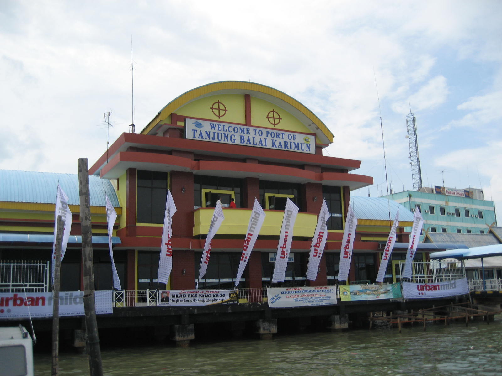
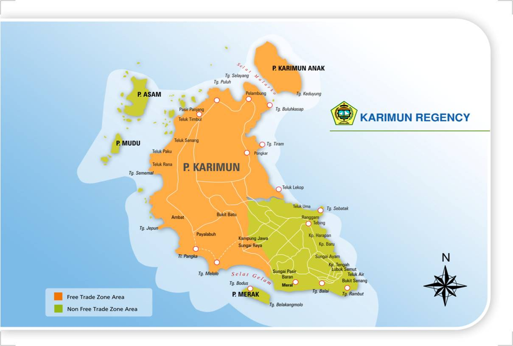
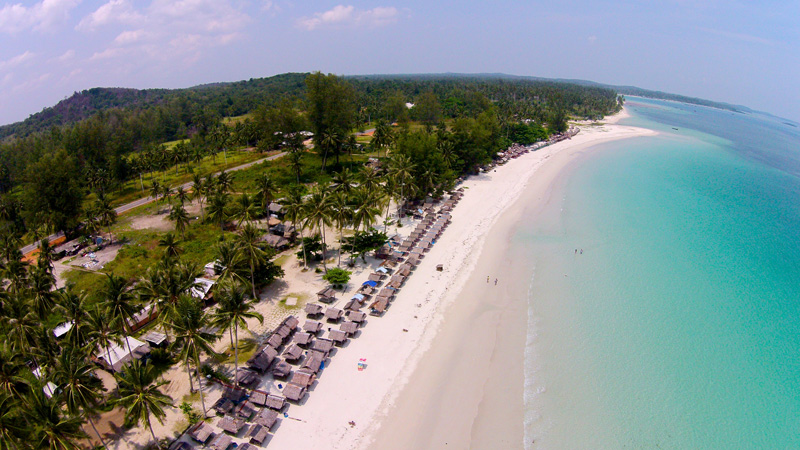
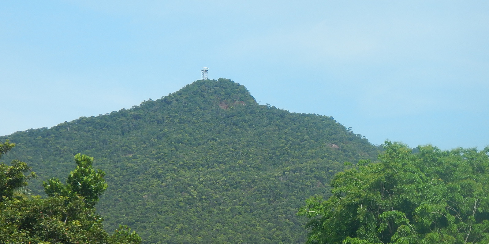

Sejarah Tanjung Balai Karimun

Dahulu, Karimun berada di bawah kekuasaan kerajaan Sriwijaya hingga keruntuhannya pada abad
ke-13, dan pada masa itu pengaruh agama Budha mulai masuk. Hal ini dibuktikan dengan adanya
Prasasti di Desa Pasir Panjang. Pada masa itu disebutkan Karimun sering dilalui kapal-kapal
dagang hingga pengaruh Kerajaan Malaka (Islam) mulai masuk tahun 1414.
Pada tahun 1511 Malaka jatuh ke tangan Portugis, saat itu Sultan Mansyur Syah yang memerintah
memberi larangan pada keturunan raja-raja untuk tinggal di Malaka, dan mendirikan
kerajaan-kerajaan kecil, lalu muncullah kerajaan Indrasakti, Indrapura, Indragiri, dan
Indrapuri. Sementara itu banyak rakyat Malaka yang tinggal berpencar di pulau-pulau yang berada
di Kepulauan Riau termasuk Pulau Karimun. Sejak kejatuhan Malaka dan digantikan perannya oleh
kerajaan Johor, Karimun dijadikan basis kekuatan angkatan laut untuk menentang Portugis sejak
masa pemerintahan Sultan Mahmud Syah I (1518-1521) hingga Sultan Ala Jala Abdul Jalil Ri’ayat
Syah (1559-1591).
Pada kurun waktu 1722-1784, Karimun berada dalam kekuasaan Kerajaan Riau-Lingga dan pada masa
itu daerah Karimun, terutama Kundur dikenal sebagai penghasil gambir dan penghasil tambang
(seperti : timah, granit, dll) dan Karimun berkembang menjadi daerah perdagangan serta mencapai
kejayaan pada masa pemerintahan Raja Ali Haji.
Letak Tanjung Balai Karimun

Posisi geografis Kabupaten Karimun terletak antara 0035’-1010’ Lintang Utara 103030’-1040 Bujur
Timur disebelah utara berbatasan langsung dengan Selat Singapura dan Semenanjung Malaysia
sedangkan sebelah selatan dengan Kabupaten Indragiri Hilir. Sebelah Timur dengan Kota Batam dan
Kabupaten Kepulauan Riau serta sebelah Barat berbatasan dengan Meranti dan Kabupaten Pelalawan.
Hal ini yang membuat Kabupaten Karimun strategis karena wilayahnya berhadapan langsung dengan
jalur pelayaran internasional yaitu Selat Malaka dan Singapura.
Tempat Hiburan di Tanjung Balai Karimun
Pantai Pelawan

Pantai pelawan yang dianggap sebagai yang terdepan di Karimun. Dengan segala pesona yang
dimilikinya, pantai ini tidak pernah surut dikunjungi pelancong, Para pelancong dari luar
daerah, sebagian bahkan turis manca Negara. View yang ditawarkan tak kalah elok. Apalagi
dihadapannya, terhampar dua pulau kecil berbatu yang satu diantaranya lebat ditumbuhi
pepohonan bakau. Kita dapat beristirahat dipondok-pondok kayu beratapkan daun sagu. Keluarga
dapat menikmati pemandangan serta angin yang berhembus dipantai ini. Selain terdapat
pondok-pondok, terdapat juga pondok penginapan Dengan harga yang terjangkau. Dengan menginap
disana kita dapat menikmati pemandangan laut pada malam hari. Pantai ini terletak di Desa
Pangke, Kecamatan Meral. Tidak sulit untuk menempuh perjalanan disana. Bisa ditempuh dengan
sepeda motor. Lokasi pantai ini tidak jauh dari perusahaan penambangan dan shipyard terkenal
di Karimun yaitu PT Saipem.
Gunung Jantan

Gunung Jantan berada di Desa Pongkar, Kecamatan Tebing, Kabupaten Karimun, Provinsi
Kepulauan Riau. Gunung ini memiliki ketinggian 439 Meter Diatas Permukaan Laut (MDPL). Untuk
bisa tiba di atas puncak, akan memerlukan waktu selama 80-90 menit perjalanan.
Untuk mencapai puncak Gunung Jantan pendaki harus melalui track yang cukup berat. Sebab,
medan yang harus dilalui berbatu dan kemiringin yang terjal dan curam. Ditambah lagi, banyak
bebatuan besar yang menjulang tinggi yang biasa digunakan sebagai jalur pendakian, maka
sangat disarankan menggunakan tongkat untuk membantu pendakian (trekking pole).